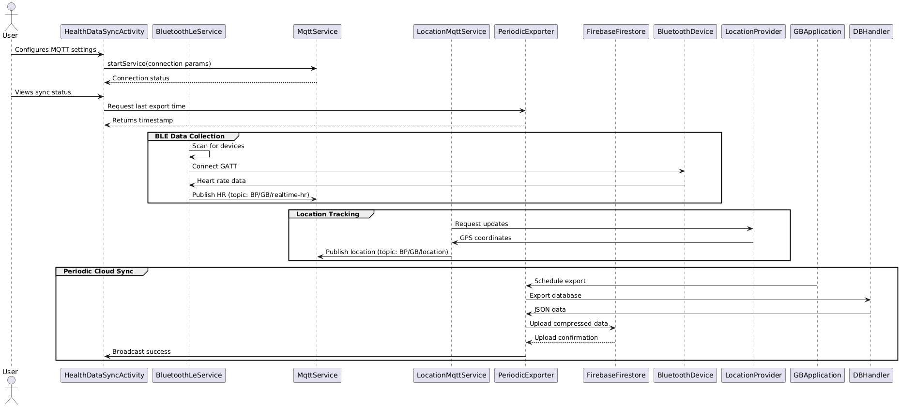
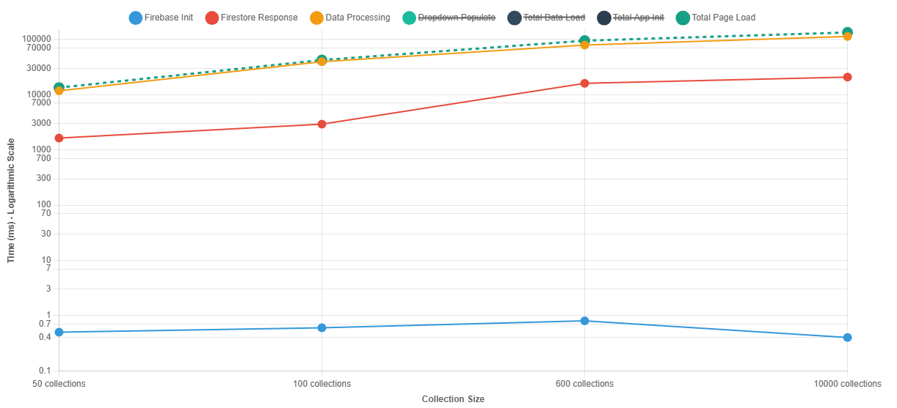
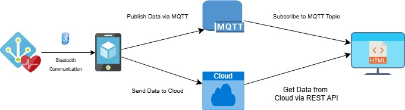

📡 Health Receiver
Bachelor Thesis — IoT & Wearable Data Ecosystem
Real‑time health monitoring · BLE · Cloud sync · MQTT
What is Health Receiver?
A complete IoT-based system that collects health & location data from wearables (Huawei watches), transmits it via MQTT and BLE, stores in the cloud, and visualizes it through a web dashboard. Designed for two data strategies: realtime high-frequency streaming and aggregated long-term records. The solution includes an Android data collector + cloud backend + interactive frontend.
Abstract
Cílem této bakalářské práce je navrhnout a implementovat systém pro záznam hodnot životních funkcí a pohybových aktivit z nositelné elektroniky (wearables). Podporuje dvě strategie měření: Realtime hustá data přenášená s maximální frekvencí; Agregovaná data z delších intervalů. Systém zahrnuje mobilní aplikaci pro Android komunikující přes BLE, lokální úložiště a synchronizaci s cloudem pro analýzy.
Languages & Tech
Outcome & Impact
✅ Robust real‑time visualization of heart rate, steps, GPS trails.
✅ Two data collection modes: live streaming + aggregated daily stats.
✅ Seamless cloud sync (local cache → remote storage).
✅ MQTT integration for low‑latency IoT data flow.
✅ Successfully tested with Huawei wearables; scalable architecture.
🔧 Where I broke my brain (the real struggle)
Developing Health Receiver wasn't just about code — it was a battle against real‑time constraints, Bluetooth instabilities, and cloud sync nightmares. Here are the top challenges that almost made me question my life choices:
- BLE reliability hell: Keeping a stable Bluetooth Low Energy connection with Huawei watches while fetching high‑frequency heart rate samples without draining the battery — Gadgetbridge integration required deep reverse‑engineering.
- Cloud sync conflicts: Offline-first architecture + periodic sync → managing conflicts between local SQLite and remote Firebase led to duplicate entries and corrupted timestamps. Solved with version vectors and last‑write‑win logic.
- MQTT latency & QoS: Real-time data needed near‑instant delivery but the broker sometimes dropped packages under poor network. Implemented a fallback retry queue with exponential backoff.
- Visualizing thousands of points: Web frontend choked on 10k+ datapoints → adopted canvas-based downsampling and WebSocket throttling.
- Android background limitations: Modern Android killed background BLE services → switched to foreground service with persistent notification and adaptive wake locks.
After 3 sleepless nights, 14 cups of coffee, and dozens of logcat traces — the system finally streamed data like a charm. ✨
System diagrams & technical insights
Below you can see the core architecture: communication flow (sequence diagram), logging mechanism, and data pipeline visualisation.

🔁 Sequence diagram
MQTT / BLE handshake + cloud sync

📜 Log & monitoring
Debugging the real‑time pipeline

🏛️ Architecture overview
Android, cloud, MQTT broker, web viewer
Core objectives (from assignment)
- Research wearables, data frequency & available APIs.
- Build Android app for data collection via BLE (Gadgetbridge integration).
- Design cloud sync mechanism with scalability.
- Implement web app for viewing stored records.
- Test & compare with existing solutions.
What happened under the hood
💡 Real-time dense data – up to 1 sample/sec from Huawei watch (HR, steps, accelerometer).
💡 Aggregated long-term data – daily summaries stored in cloud for trend analysis.
💡 Gadgetbridge fork – extended open-source library to forward sensor values to custom MQTT topics.
💡 Web dashboard – Leaflet maps + dynamic charts (Chart.js) + WebSocket live updates.
💡 Offline resilience – Room database caches measurements and retries sync on network recovery.
Official thesis publication
The full text is available through the VŠB‑TUO repository (faculty of electrical engineering and computer science).
View at VŠB digital library(thesis ID: BP0468 / 2024 — Health Receiver: IoT platform for wearable health data)